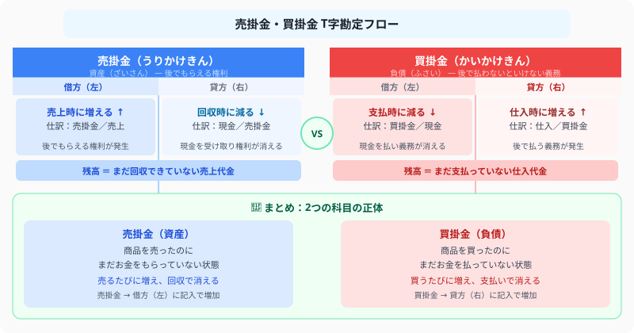

掛取引（売掛金・買掛金）の仕訳
後払いの取引を図解で完全解説
- 売掛金＝掛けで売ったときに発生する「後でもらえる権利」（資産）。回収したら消える。
- 買掛金＝掛けで買ったときに発生する「後で払う義務」（負債）。支払ったら消える。
- 発生・回収・返品の仕訳は「資産・負債の増減」で考えれば迷わない
- 後払いに「現金」ではなく専用科目を使う理由は、誰からいくら回収すべきかを管理するため
こんにちは、大谷です！
実は、今回紹介する「掛取引」ですが、僕が簿記を習い始めたばかりの頃、商品を売ったのに手元の現金は1円も増えていないのに「売上」として記録するという事実を知ったとき、「え、お金もらってないのになんで売上が立つの……？うわっ、なんじゃこりゃ！」と本気で脳内パニックを起こした論点でした（笑）。
でも実は、この違和感の正体はとてもシンプルです。簿記は「現金が動いたかどうか」ではなく「権利や義務が発生したかどうか」を記録するゲームなんです。商品を売った瞬間、たとえ現金は動いていなくても「後でお金をもらえる権利」が確実に発生している——だからこれを「売掛金」という資産として記録します。逆に買った側は「後でお金を払う義務」が発生するので「買掛金」という負債になる。つまり掛取引は【後でもらえる権利・後で払う義務のパズル】なんです。
今回は、このパズルをゲーム感覚で攻略する裏技を、図解と一緒にお届けします！
また、記事の末尾のほうにある【いいねボタン】をポチッと押してもらえると、めちゃくちゃ嬉しいです！
❓ 売掛金・買掛金とは？資産と負債の違いを図解

図解を見てください。売掛金は「後でもらえる権利」なので資産、買掛金は「後で払わないといけない義務」なので負債です。T字勘定の左側（借方）に書くと「資産は増える」、右側（貸方）に書くと「負債は増える」——これが仕訳の大原則です。
📝 ① 掛けで売ったときの仕訳——売掛金（資産）が発生する瞬間
A社に商品 ¥100,000 を掛けで売り上げた。
💰 ② 売掛金を回収したとき——資産が現金に変わる仕訳
A社への売掛金 ¥100,000 を現金で回収した。
📦 ③ 掛けで買ったときの仕訳——買掛金（負債）が発生する瞬間
B社から商品 ¥80,000 を掛けで仕入れた。
💸 ④ 買掛金を支払ったとき——負債が消える仕訳
B社への買掛金 ¥80,000 を当座預金から支払った。
🔄 ⑤ 返品が起きたときの仕訳——売上返品と仕入返品はどう違う？
売掛金が発生した仕訳を逆にすれば売上返品、買掛金が発生した仕訳を逆にすれば仕入返品になります。
💡 ⑥ なぜ「現金」じゃなくて売掛金・買掛金を使うのか？
「後払いなら現金勘定で記録すればいいのでは？」と思うかもしれません。しかし、それでは以下の問題が生じます。
- まだ受け取っていないのに帳簿の現金が増える → 帳簿残高と実際の現金が一致しない
- 誰からいくら回収すべきか帳簿からわからない → 取引先ごとの管理ができず、回収漏れのリスクが生じる
- 現金取引と信用取引を区別できない → 会社の資金状況を正確に把握できない
- 売掛金（資産） ＝ 後でもらえる権利を明示 → 誰からいくら回収すべきか帳簿で管理できる
- 買掛金（負債） ＝ 後で払う義務を明示 → いつ誰にいくら払うか計画が立てられる
- 現金と掛を明確に分けることで、会社の真の財務状況を正確に把握できる
現金はまだ動いていなくても、権利と義務は取引時点で確実に発生しています。これが掛取引の本質です。
📌 ⑦ 手付金の仕訳——前払金・前受金はいつ使う？注文時と受取時の違い
商品の注文時に代金の一部を先払い（または先受け）することがあります。この「手付金」は掛取引とは別の勘定科目を使います。
| 立場 | 手付金を払ったとき | 商品を受け取ったとき |
|---|---|---|
| 買う側（仕入側） | 前払金（資産）↑ | 前払金↓ ＋ 買掛金などで差額精算 |
| 売る側（売上側） | 前受金（負債）↑ | 前受金↓ ＋ 売掛金などで差額精算 |
・前払金（資産）＝ まだ受け取っていない商品への「権利」→ お金は出て行ったが商品はまだ来ていない
・前受金（負債）＝ まだ渡していない商品への「義務」→ お金は入ったが商品をまだ渡していない
📋 まとめ：掛取引 早見表
この記事が少しでも参考になったら……
掛取引は「現金が動いたか」ではなく「権利・義務が発生したか」で記録するパズルだと気づけば、売掛金・買掛金の仕訳はもう怖くありません。
僕の執筆のモチベーション維持のために、この下にある【いいねボタン】をポチッと押してもらえると、めちゃくちゃ嬉しいです！